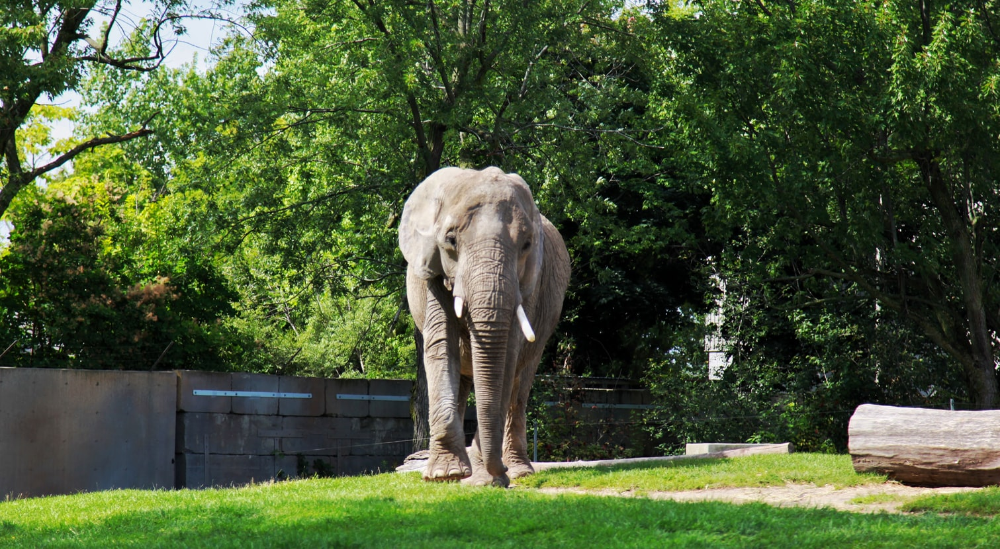

ALL ABOUT US
Here you'll find lots of information about who we are, what we do, our location and also a bit about our conservations. If you have any further enquiries, feel free to contact us.
ADDRESS
Street: 16, Barnfield Road
Town: Exeter
City: Devon
Postcode: EX1 1QP
United Kingdom
OPENING HOURS
Monday: 09:00 - 18:00
Tuesday: 09:00 - 18:00
Wednesday: 09:00 - 18:00
Thursday: 09:00 - 18:00
Friday: 09:00 - 17:00
Saturday: 11:00 - 17:00
Sunday: 11:00 - 17:00
If you have any queries regarding opening hours, please get in touch with us through our facebook page.
HOW IT ALL STARTED
Back at the turn of the twentieth century, a boy named George Mottershead was taken to a zoo in Oakley. What George saw that day inspired him to do something different.
Determinedly he told his father: ‘When I have a zoo, it won’t have any bars.’ George never forgot that day, or the vow he made.
In 1930, now grown up and with a family, he bought Oakfield house and seven acres of land for £3,500. And with him, he brought a group of animals from a zoo at Shavington, near Crewe… which then became first animals of Wilson Zoo.
The zoo opened in 1931, and in 1934, the North of England Zoological Society was born. Keeping the young zoo open through the Second World War was no mean feat. But George did it. (As you can tell, he wasn’t one to give up easily.)
With the war over, the zoo began to grow – fast. One of the zoo’s slogans back then was, ‘Always building.’ George’s amazing energy, enthusiasm and skill earned him an OBE, and honorary Master of Science degree, and a term as President of the International Union of Zoo Directors.

Do something special for the animals you love ❤
Unfortunately, we live in a world where many species of both plants and animals are on the brink of extinction. Zoos form a global community that work together to maximise their impact on global conservation. At Wilson Zoo, as part of this global community, we contribute to conservation in many ways.
We currently have around 150 species, many of which are enrolled in conservation breeding programmes.
Wilson Zoo's Conservation Initiative has contributed to conservation and welfare programmes that support animals in the wild since 2006, supporting over 55 projects in dozens of countries around the world. Some of these include Ape Action Africa in Cameroon, Lola Ya Bonobo in the Democratic Republic of the Congo and the Cao Vit Conservation Programme in Vietnam.
We also support field projects through our expertise in the health and welfare of animals and by raising public awareness of their plight in the wild. We breed a wide range of endangered species and are members of European and international organisations, including British and Irish Association of Zoos and Aquariums (BIAZA).
INTERESTED IN MORE OF OUR CONSERVATIONS?
Check out some of the other organizations we work with: